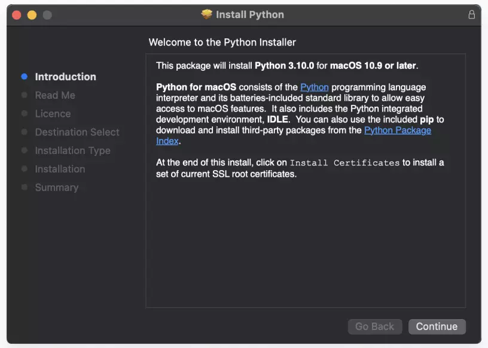
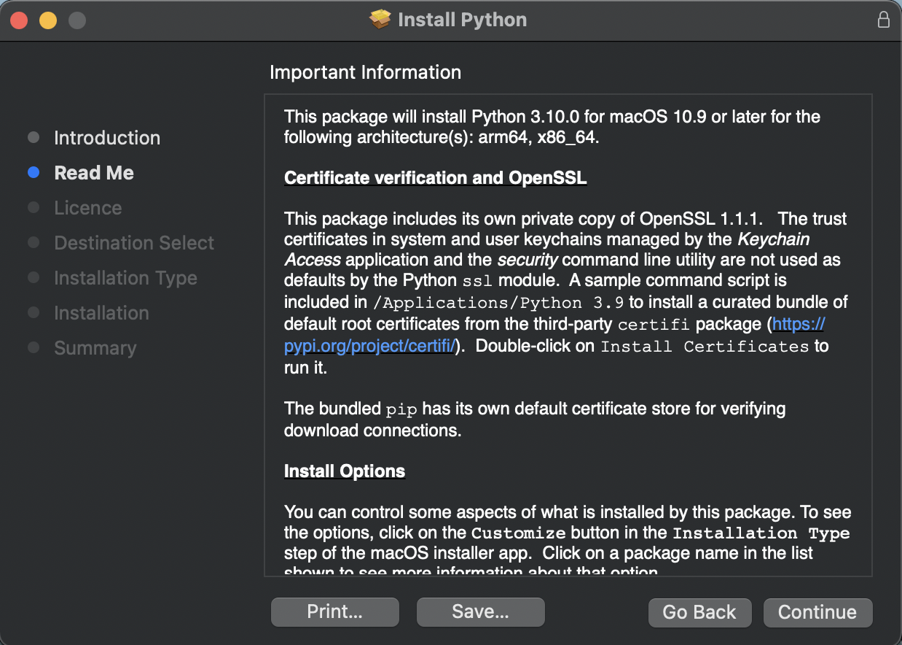
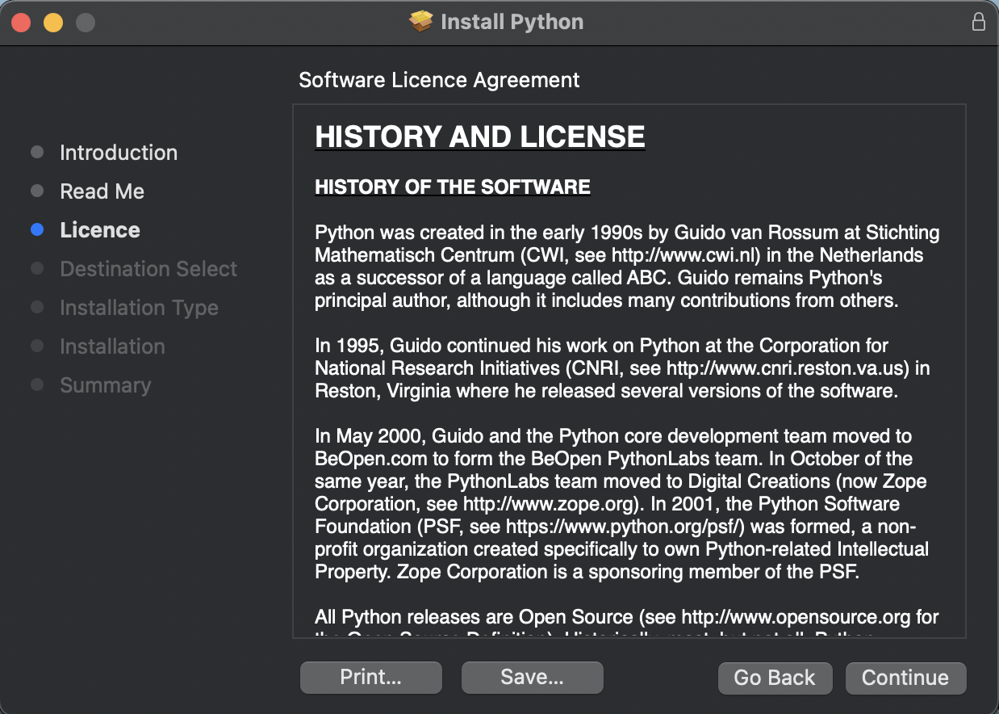
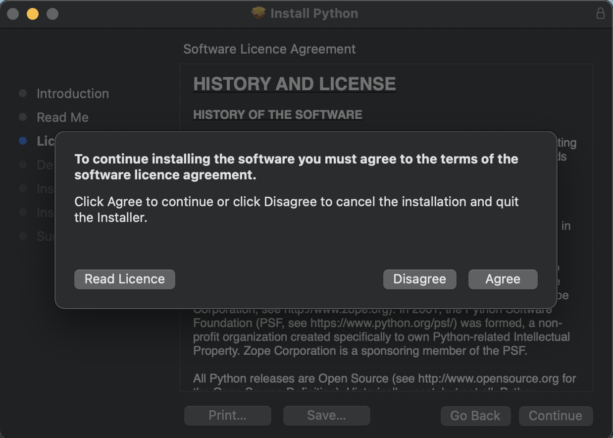
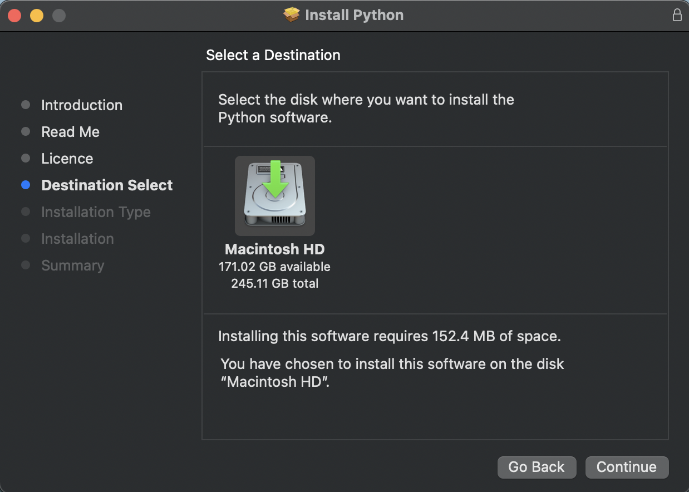
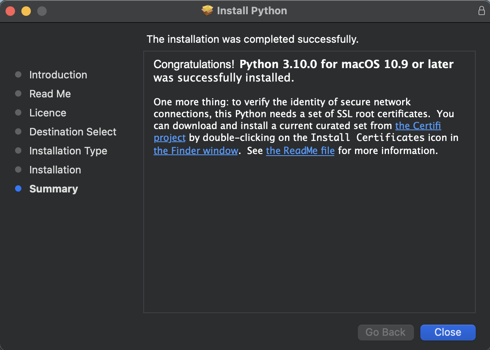

This is probably the easiest way to install python in your Mac computer. To install python, do the following steps:
.pk file and a dialog box will appear like below.





Homebrew, a package manager for Mac, is another way to install Python. This approach is preferred by users who want to install Python from the command line. However, it requires Homebrew to be already up and running on your Mac.
$ brew update
$ brew install python
There are various ways to verify if Python was successfully installed in your Mac machine.
You can use the terminal command which, where it will print the path of Python in your machine:
$ which python
# prints the following
$ /usr/local/bin/python
You can also execute the command to check the version of Python installed in your machine using the terminal.
$ python --version
# prints the following
Python 3.10.0
Congratulations! You have successfully installed Python in your machine. Happy coding!!!